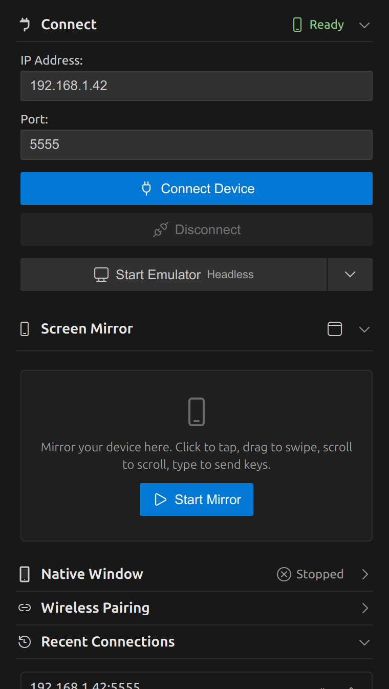
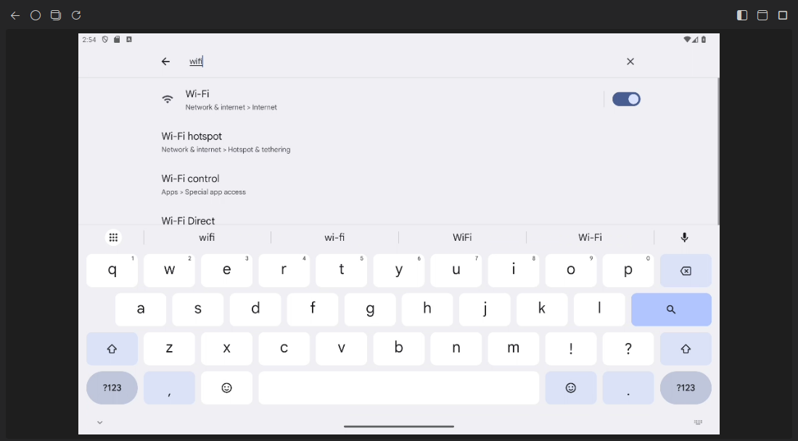

Get started
DroidBridge works with USB devices, emulators and phones on your Wi-Fi. You only need ADB, and DroidBridge finds or downloads it for you.
- Install the extension from the VS Code Marketplace or Open VSX, or run:
code --install-extension lusansapkota.droidbridge - Turn on developer options on the device: Settings > About phone, then tap Build number seven times.
- Connect the device. Plug it in over USB and accept the debugging prompt, or start an emulator. The Connect header shows Ready as soon as ADB sees it. With nothing connected, Start Mirror offers the emulators from your Android SDK and boots the one you pick, or creates a new phone or tablet emulator from an installed system image. With several devices connected, it asks which one to mirror.
- For Wi-Fi, open Developer options > Wireless debugging. Pair once with the code shown there using Wireless Pairing in the sidebar, then enter the IP and port under Connect.
- Open the DroidBridge view in the activity bar and click Start Mirror.
Screen mirror
The device screen streams into the sidebar and stays interactive. It keeps the device's shape at any sidebar width and follows rotation, so phones and landscape tablets both fit.

| To do this | On the mirror |
|---|---|
| Tap | Click |
| Swipe or drag | Click and drag |
| Scroll | Mouse wheel or trackpad |
| Type | Click the mirror, then type in any keyboard layout. Enter, Backspace and arrow keys work. |
| Paste from your computer | Ctrl+V (Cmd+V on macOS) or the clipboard button |
| Back | Right click or Escape, or the back button in the toolbar |
| Home, recent apps, rotate, volume, power, notifications | Toolbar buttons above the mirror |
| Screenshot | Camera button: saves a full resolution PNG where you choose |
| Record the screen | Record button, then the red stop button to save the MP4 (up to 3 minutes) |
More room
Use Open in editor tab to move the mirror into a resizable editor tab. Drag that tab out to give the device its own window, and use Move back to sidebar to dock it again.

Emulators
Under Connect, Start Emulator boots or creates an emulator. The square button next to it stops the running emulator, and the gear opens Emulator Settings: CPU cores, memory, VM heap, internal storage, graphics (Automatic, Hardware or Software), Quick or cold boot, start orientation, computer keyboard and device frame. It can also delete the saved Quick Boot state or wipe the emulator's data. Changes apply on the next start, or right away with Save and Restart.
Prefer the classic scrcpy window? Use Open in native scrcpy window. It needs scrcpy installed; the embedded mirror does not.
AI agents (MCP)
DroidBridge includes an MCP server, so AI agents can look at the screen, read its elements, tap, type, read logs and install builds. Keep the mirror open and watch every step.
Try prompts like these:
- Install the debug APK from app/build/outputs, log in with the test account and tell me if the dashboard loads.
- Open the settings screen and check logcat for the crash. Explain the cause.
- Rotate the tablet and check whether the checkout layout still fits.
GitHub Copilot in VS Code
Nothing to set up. Open Copilot Chat in Agent mode, open the tools picker and enable DroidBridge Android.
Claude Code
Run DroidBridge: Set Up AI Agent Access (MCP) from the command palette, choose Claude Code, and paste the copied command into a terminal. It looks like this:
claude mcp add droidbridge -e DROIDBRIDGE_ADB="/path/to/adb" -- node "/path/to/globalStorage/lusansapkota.droidbridge/mcp-server.js"Cursor, Claude Desktop, Windsurf and others
Run the same command and choose the JSON option, then add it to the client's MCP configuration:
{
"mcpServers": {
"droidbridge": {
"command": "node",
"args": ["/path/to/globalStorage/lusansapkota.droidbridge/mcp-server.js"],
"env": { "DROIDBRIDGE_ADB": "/path/to/adb" }
}
}
}External clients need Node.js. The copied path stays the same when DroidBridge updates.
Agent tools
Coordinates are device pixels. With more than one device connected, every tool takes a serial from list_devices.
| Tool | What it does |
|---|---|
list_devices | Connected devices and emulators, with their serials, plus the emulators that can be started |
start_emulator, stop_emulator | Boot an emulator by avd name and wait until it is ready (headless unless headless is false), or shut one down, even one stuck offline. Headless starts cold boot and never save state, so they cannot break the windowed emulator's Quick Boot. Starting an emulator that is already running returns its serial. |
pair_device, connect_device, disconnect_device | Wireless debugging: pair with the address and code from the pairing dialog, then connect or disconnect by IP:port |
device_info | Model, Android version, screen size, rotation, load, free memory and battery |
screenshot | The screen as an image, with the scale to device pixels. maxSide sets the image size (default 1024). Handles every screencap pixel format. |
screen_record | action start, do the steps, then stop to save an MP4 on your computer (localPath, default the temp folder). For animations and timing bugs. |
ui_tree | On-screen elements with text, description, id and tap position. filter narrows the list. Reports which app it read, how many nodes it held, whether another window has focus, and why the result is empty (for example a Flutter app without semantics). When UI Automator cannot read the screen, it falls back to the Android view hierarchy. |
tap_element | Find an element by text, id or desc and tap it. Scrolls the largest list up to maxScrolls times (default 5) when the element is not on screen yet. |
wait_for | Wait until an element matching text, id or desc appears, or disappears with gone. Polls less often the longer it waits, to keep the device responsive. |
tap, long_press | Touch at x, y. Taps hold for durationMs (default 60 ms) so gesture detectors in React Native, Compose and Flutter register them. |
swipe | Swipe from x1, y1 to x2, y2. Swipe up to scroll down. |
type_text | Type into the focused field, in any language. Text that is not plain ASCII is pasted through the device clipboard. submit presses Enter. |
press_key | back, home, recents, enter, delete, tab, arrows, power, volume and more, or any Android keycode |
current_app | The app and screen in the foreground |
list_apps, launch_app | Find installed packages and start one |
start_activity | Start a component, or an action with data, with typed extras such as {"userId": 42, "debug": true}. stopFirst force-stops the app first. |
stop_app, clear_app_data | Force-stop an app, or erase its data as if freshly installed |
set_permission | Grant or revoke a runtime permission, such as CAMERA |
set_display | Dark mode, font scale, screen size and density (test tablet layouts on a phone), and rotation. reset restores the default. |
set_app_locale | Run an app in another language, Android 13 and later |
open_url | Open a URL or app deep link |
install_apk | Install an APK, the split APKs of one app (paths), or an .aab through bundletool. grantPermissions and allowDowngrade map to -g and -d. |
push_file, pull_file | Copy files to and from the device. With package, pull_file reads a debuggable app's private files, such as databases/app.db. |
logcat | Recent logs, filtered on the device by package, tags, level and sinceSeconds, or by text, optionally clearing the buffer |
shell | Run an adb shell command on the device |
reset_adb | Reconnect devices stuck offline. restartServer restarts the ADB server, which also drops Android Studio, scrcpy and logcat sessions; it is used automatically when ADB does not respond. |
Input tools (tap, tap_element, long_press, swipe, type_text, press_key) take an optional expectPackage. When another app is in the foreground they refuse to act, so an extra Back press cannot send the next taps into another app.
Agents act on your device the way you would. Review what you allow, especially shell and install_apk. Most MCP clients ask before each tool call.
Settings
Open Settings and search for DroidBridge, or add these to settings.json.
| Setting | Default | What it does |
|---|---|---|
droidbridge.scrcpy.maxSize | 1024 | Longest side of the mirror in pixels. 0 uses the native resolution. |
droidbridge.scrcpy.bitrate | "8M" | Video bitrate. Raise it for sharp tablets, lower it on slow Wi-Fi. |
droidbridge.scrcpy.alwaysOnTop | true | Keep the native scrcpy window above other windows. |
droidbridge.emulator.headless | true | Start emulators without their own window, shown only in the DroidBridge mirror. Headless starts cold boot and do not save state. Also switchable from the Start Emulator menu. |
droidbridge.defaultIp | "192.168.1.100" | IP address filled in under Connect. |
droidbridge.defaultPort | "5555" | Port filled in under Connect. |
droidbridge.adbPath | "" | Custom ADB path. Leave empty to detect it automatically. |
droidbridge.scrcpyPath | "" | Custom scrcpy path for the native window. Leave empty to detect it. |
Commands
All commands are in the command palette under DroidBridge.
| Start Screen Mirror, Stop Screen Mirror | Embedded mirror |
| Open Screen Mirror in Editor Tab | Move the mirror to an editor tab |
| Open Screen Mirror in Native Window, Launch Scrcpy, Launch Scrcpy Screen Off, Stop Scrcpy | Native scrcpy window |
| Start Emulator, Stop Emulator | Boot or create an Android SDK emulator (AVD), or shut one down |
| Emulator Settings | CPU cores, memory, storage, graphics and boot mode of an emulator; delete saved state or wipe data |
| Save Device Screenshot, Start or Stop Screen Recording | Capture the device screen to a PNG or MP4 |
| Connect to Device, Disconnect Device, Pair Device (Manual) | Wireless ADB |
| Set Up AI Agent Access (MCP) | Copy setup for Claude Code, Cursor and other agents |
| Check Binary Status, Download Missing Binaries, Refresh Binary Detection | ADB and scrcpy setup |
| Show Logs | Open the DroidBridge output log |
| Reset ADB | Emergency reset: stop mirroring, remove port forwards and restart the ADB server |
Troubleshooting
The sidebar says Disconnected with a USB device plugged in
Unlock the device and accept the "Allow USB debugging" prompt. If no prompt appears, unplug, revoke USB debugging authorizations in Developer options, and plug in again. Check that adb devices lists the device as device, not unauthorized.
Wireless connection fails
The computer and device must be on the same network. On Android 11 and newer, pair first with the code from Wireless debugging; pairing codes expire after about a minute. The connect port differs from the pairing port.
The mirror stays on Starting or freezes
Stop and start it from the toolbar. On slow Wi-Fi, lower droidbridge.scrcpy.maxSize to 720 or the bitrate to 4M. Show Logs includes the mirror server output.
The video could not be decoded
A few devices produce video that your platform's decoder rejects. Lower droidbridge.scrcpy.maxSize, or use the native scrcpy window.
An agent says ui_tree failed
The screen was animating or showed protected content, such as a banking app or a lock screen. The error includes UI Automator's own message; "could not get idle state" means the app animates continuously. The tool then returns the Android view hierarchy instead. Ask the agent to try again or take a screenshot. If the error says the device is overloaded, it has just started and is still busy; see below. A Flutter app shows no elements until semantics is enabled.
A device stays offline or the mirror hangs
Click Reset ADB in the sidebar footer. It stops mirroring and scrcpy, removes port forwards, restarts the ADB server and reconnects a wireless device. USB devices and emulators come back on their own. Agents can call reset_adb, which first only reconnects devices so Android Studio and other ADB users keep working.
No emulators are listed
DroidBridge looks for the Android SDK in ANDROID_HOME, ANDROID_SDK_ROOT, next to adb and in the default SDK folder. Set ANDROID_HOME if yours is elsewhere, and install the Android Emulator from the Android Studio SDK Manager. Creating an emulator also needs the Android SDK Command-line Tools and Java.
An emulator is slow right after starting
Images with Google Play update themselves for a minute or two after a cold boot. DroidBridge waits for this before calling the emulator ready, and tells agents when the device is too busy. The device_info tool shows the load. For automation, Google APIs images and more CPU cores for the AVD help.
An emulator starts but nothing works
Its saved Quick Boot state may be broken. DroidBridge detects this and cold boots once. If it keeps happening, use Wipe Data in Emulator Settings.
Black screen, "Failed to find ColorBuffer" or "System UI isn't responding"
The emulator resumed a Quick Boot state saved with a different renderer, for example by a headless start in DroidBridge 1.1. Stop it, open Emulator Settings and click Delete Saved State. Headless starts no longer save state, so it will not come back. If the screen stays black with Hardware graphics, choose Software.
A headless emulator keeps running
Run DroidBridge: Stop Emulator, or ask the agent to call stop_emulator. Headless emulators started by DroidBridge also stop when VS Code closes.
Claude Code or Cursor cannot start the MCP server
These clients start the server with Node.js. Install Node.js 18 or newer, run Set Up AI Agent Access again, and replace the old entry with the newly copied one.
Requirements
| Editor | VS Code 1.104 or newer, or a compatible editor that installs from Open VSX |
| Device | Android 5.0 or newer with USB or wireless debugging enabled |
| Computer | Windows, macOS or Linux |
| Native window | scrcpy, only if you use it |
| External AI clients | Node.js 18 or newer |